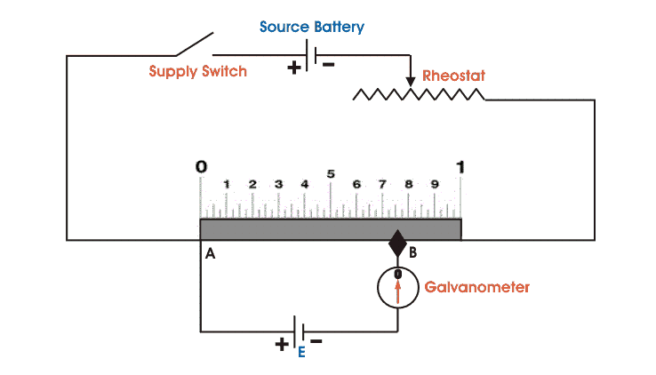
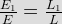
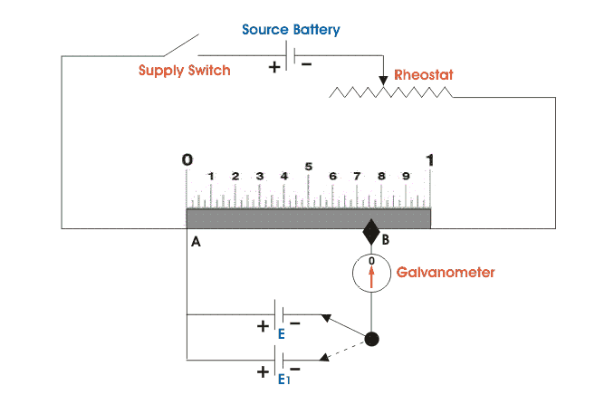

This is a very basic instrument used for comparing emf two cells and for calibrating ammeter, voltmeter and watt-meter. The basic working principle of potentiometer is very very simple.
Suppose we have connected two battery in head to head and tale to tale through a galvanometer. That means the positive terminals of both battery are connected together and negative terminals are also connected together through a galvanometer as shown in the figure below.
Here in the figure it is clear that if the voltage of both battery cells is exactly equal, there will be no circulating electric current in the circuit and hence the galvanometer shows null deflection. The working principle of potentiometer depends upon this phenomenon.
Now let's think about another circuit, where a battery is connected across a resistor via a switch and a rheostat as shown in the figure below, there will be a voltage drop across the resistor. As there is a voltage drop across the resistor, this portion of the circuit can be considered as a voltage source for other external circuits. That means anything connected across the resistor will get voltage. If the resistor has uniform cross section throughout its length, the electrical resistance per unit length of the resistor is also uniform throughout its length. Hence, voltage drop per unit length of the resistor is also uniform. Suppose the electric current through the resistor is i A and resistance per unit length of the resistor is r Ω. Then the voltage appears per unit length across the resistor would be 'ir' ans say it is v volt.
Now, positive terminal of a standard cell is connected to point A on the sliding resistor and negative terminal of the same is connected with a galvanometer. Other end of the galvanometer is in contact with the resistor via a sliding contact as shown in the figure above. By adjusting this sliding end, a point like B is found where, there is no electric current through the galvanometer, hence no deflection of galvanometer. That means emf of the standard cell is just balanced by the voltage drop appears across AB. Now if the distance between point A and B is L, then it can be written emf of standard cell E = Lv volt. As v (voltage drop per unit length of the sliding resistor) is known and L is measured from the scale attached to the resistor, the value of E i.e. emf of standard cell can also be calculated from the above simple equation very easily.

Basic DC Potentiometer
We said earlier in this section that one of the uses of potentiometer is to compare emfs of different cells. Let's discuss how a dc potentiometer can compare emfs of two different cells. Let's think of two cells whose emf's are to be compared are joined as shown in the figure below. The positive terminals of the cells and source battery are joined together. The negative terminals of the cells are joined with the galvanometer in turn through a two way switch. The other end of the galvanometer is connected to a sliding contact on the resistor. Now by adjusting sliding contact on the resistor, it is found that the null deflection of galvanometer comes for first cell at a length of L on the scale and after positioning to way switch to second cell and then by adjusting the sliding contact, it is found that the null deflection of galvanometer comes for that cell at a length of L1 on the scale.
Let's think of the first cell as standard cell and it's emf is E and second cell is unknown cell whose emf is E1. Now as per above explanation,
E = Lv volt and
L1 = L1v volt
Dividing one equation by other, we get
E = Lv volt and
L1 = L1v volt
Dividing one equation by other, we get

As the emf of the standard cell is known, hence emf of the unknown cell can easily be determined.

Potentiometer
 by
by {kind=link}